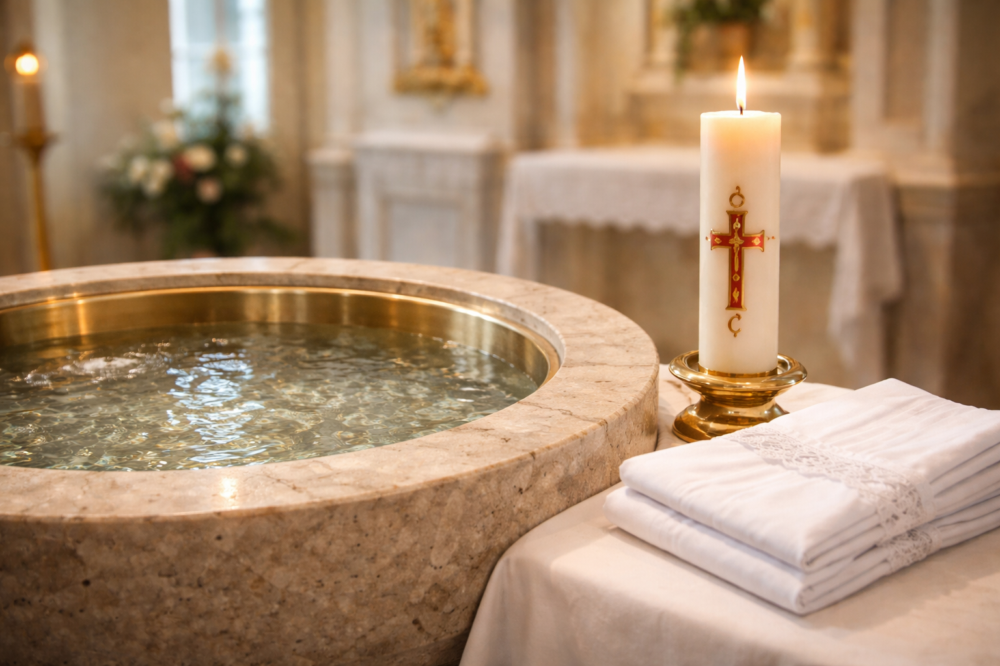

O Significado do Batismo: Nascimento para a Vida Eterna
O Batismo é o fundamento de toda a vida cristã, a porta da vida no Espírito e a porta que abre o acesso aos demais sacramentos. Através do Batismo, somos libertos do pecado, regenerados como filhos de Deus e incorporados à Igreja, tornando-nos participantes de sua missão. É muito mais do que uma cerimônia social ou uma tradição familiar; é um evento ontológico que imprime um caráter indelével na alma.
O que acontece no Batismo?
A palavra "batizar" vem do grego baptizein, que significa "mergulhar". O mergulho na água simboliza o sepultamento do catecúmeno na morte de Cristo, de onde ele ressurge com Ele como "nova criatura" (2 Coríntios 5, 17). Os efeitos principais do Batismo são:
- Purificação dos Pecados: O Batismo apaga o pecado original e todos os pecados pessoais (no caso de adultos), bem como todas as penas devidas ao pecado.
- Nova Criatura: O batizado torna-se "filho adotivo" de Deus, participante da natureza divina e templo do Espírito Santo.
- Incorporação na Igreja: Passamos a fazer parte do Corpo Místico de Cristo, unidos a todos os outros batizados.
- Caráter Sacramental: O Batismo marca a alma com um sinal espiritual espiritual que ninguém pode apagar, por isso ele só é recebido uma vez na vida.
"Em verdade, em verdade te digo: quem não nascer da água e do Espírito não pode entrar no Reino de Deus." (João 3, 5)
Os Símbolos do Rito Batismal
Cada gesto e objeto no rito do Batismo tem um significado profundo:
- A Água: Simboliza a vida e a purificação. Ela lava a alma e dá a vida divina.
- O Óleo do Crisma: Significa o dom do Espírito Santo. O batizado é ungido como Cristo foi: Sacerdote, Profeta e Rei.
- A Veste Branca: Simboliza que a pessoa "revestiu-se de Cristo" e ressuscitou com Ele para uma vida pura.
- A Vela (Círio Pascal): Simboliza que Cristo iluminou o batizado. Ele agora é "luz do mundo" e deve manter sua fé acesa.
A Missão do Batizado
O Batismo não é um fim, mas um começo. Ele nos confere a missão de sermos testemunhas de Jesus Cristo no mundo. Todo batizado é chamado à santidade e ao apostolado. Não importa nossa profissão ou estado de vida, nossa primeira vocação é viver como filhos de Deus, levando a luz do Evangelho onde quer que estejamos.
O Papel dos Padrinhos
Os padrinhos não são apenas figuras de honra. Eles têm a grave responsabilidade de ajudar os pais na educação cristã do afilhado. Devem ser pessoas de fé firme, que vivam de acordo com os ensinamentos da Igreja, servindo de exemplo e apoio na caminhada espiritual da criança ou do adulto batizado.
Conclusão: Viver o nosso Batismo
Muitas vezes esquecemos a data do nosso batismo, mas ela é o nosso "aniversário espiritual", o dia mais importante de nossas vidas. Viver o batismo significa renovar diariamente nossas promessas, renunciando ao mal e escolhendo seguir a Cristo. Que possamos honrar a dignidade que recebemos na pia batismal, buscando sempre a glória de Deus em todas as nossas ações.
Senhor, renovai em nós a graça do nosso batismo e fazei-nos fiéis à nossa vocação cristã.